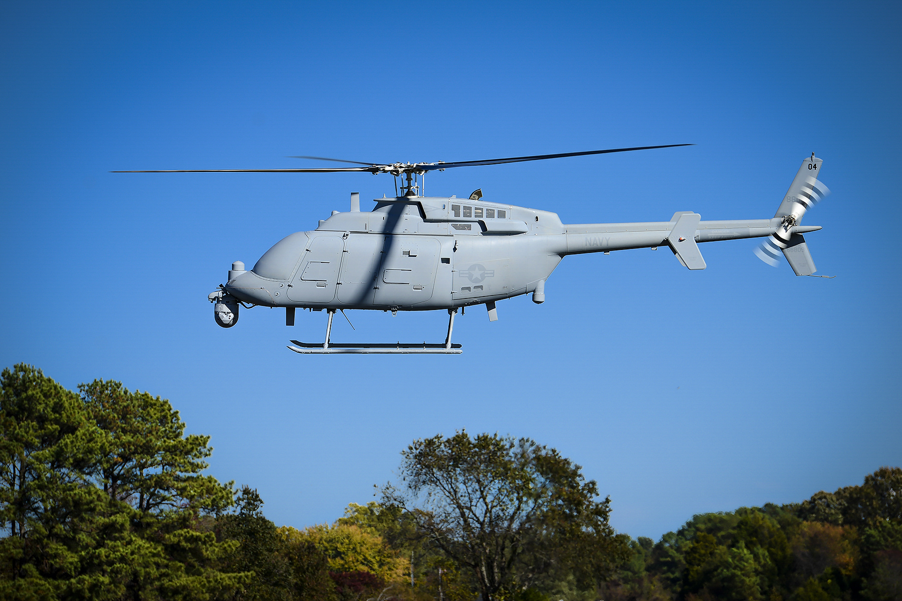

Scope of observation
Exploring unseen clues on land and at sea.
Physical Detection / Overview
Connecting observations on land and at sea with location,
to build a clearer understanding of the surrounding environment.


WHAT THIS ENABLES / OUR AMBITION
Exploring unseen clues on land and at sea.
Understanding survey information alongside maps.
Clearly identifying information that needs further review.
EXPLORE THE SOLUTION
See the detailed pages below for the development and review scope of each application.
The next step: connected observations.